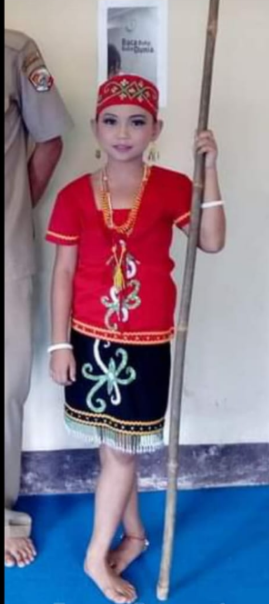
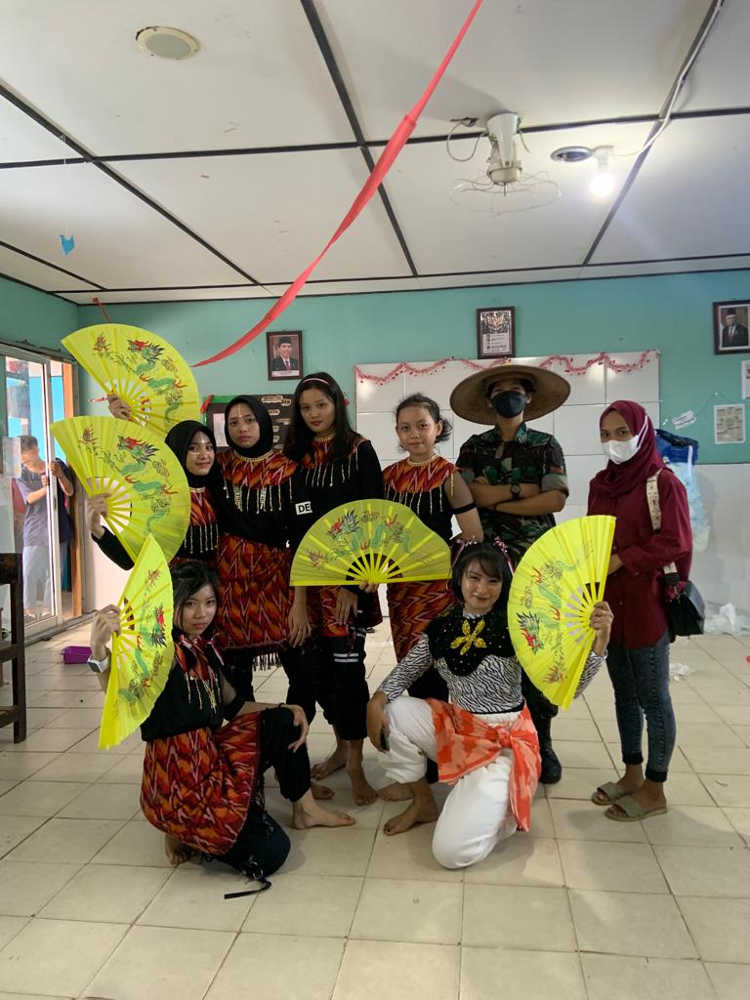
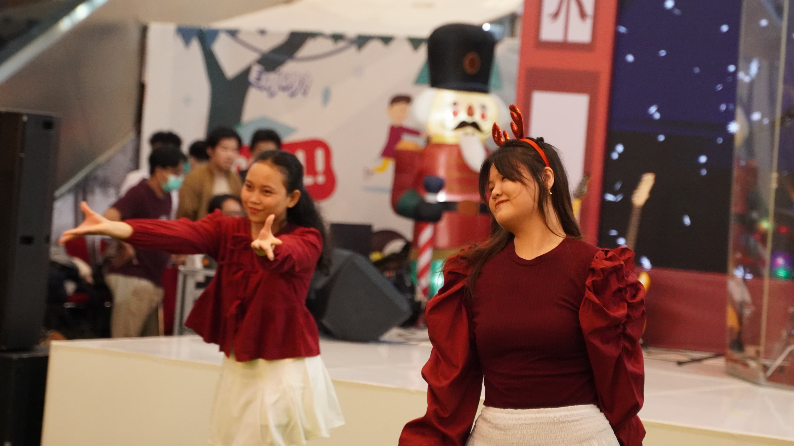
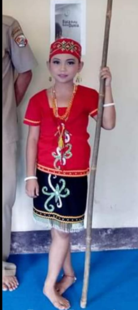
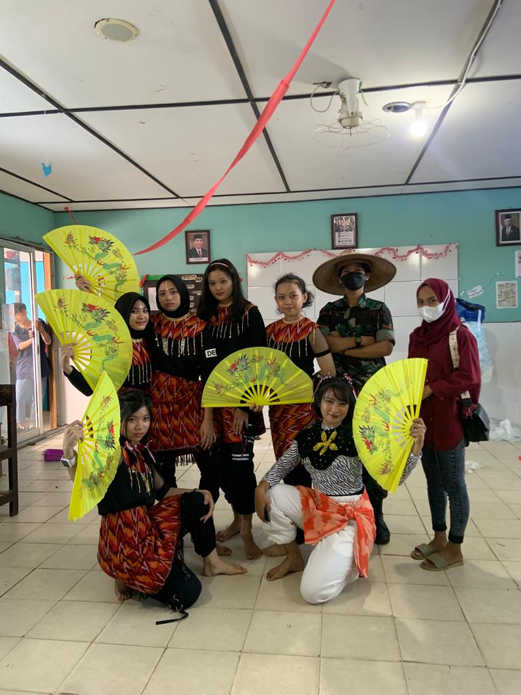
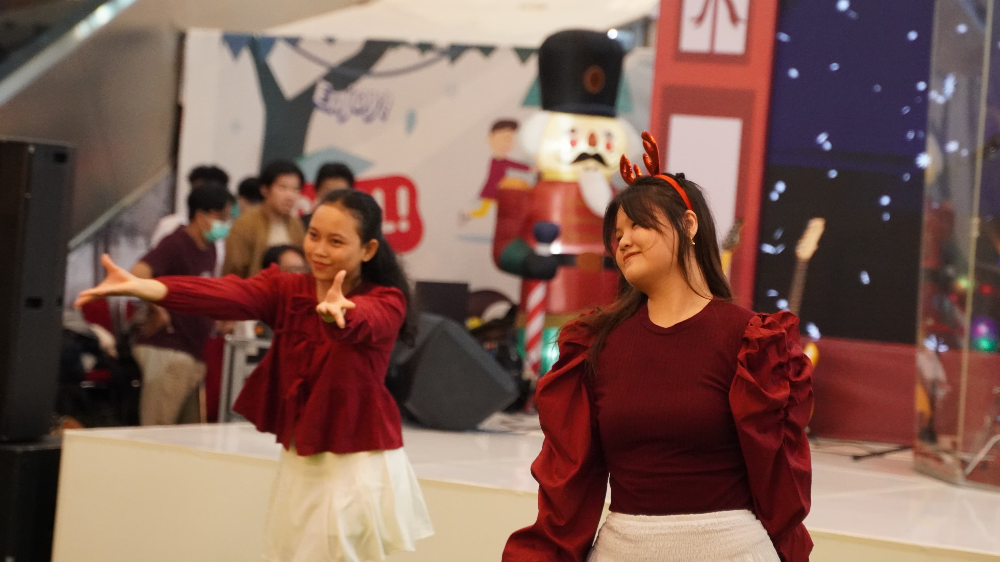

TARI
TRADISONAL & MODERN
 





- Sejak belajar dan menguasai gerakan tari baru, itu bisa memberi rasa pencapaian yang besar. Kepercayaan diri kita bisa meningkat, baik di atas panggung maupun dalam kehidupan sehari-hari. Menari adalah cara yang menyenangkan untuk melepaskan stres. Gerakan tubuh yang aktif membantu melepaskan endorfin, yang membuat kita merasa lebih bahagia dan rileks.